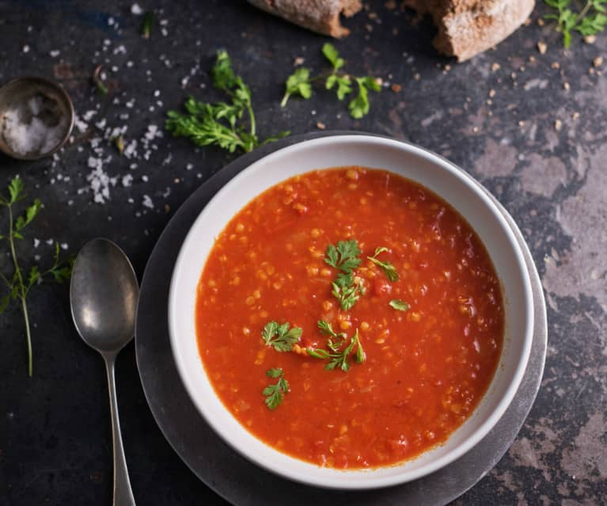
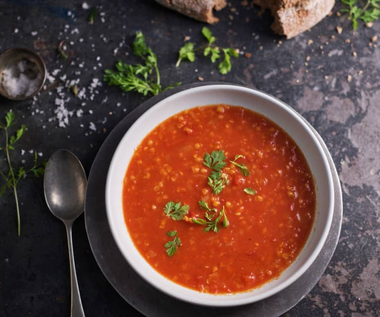
 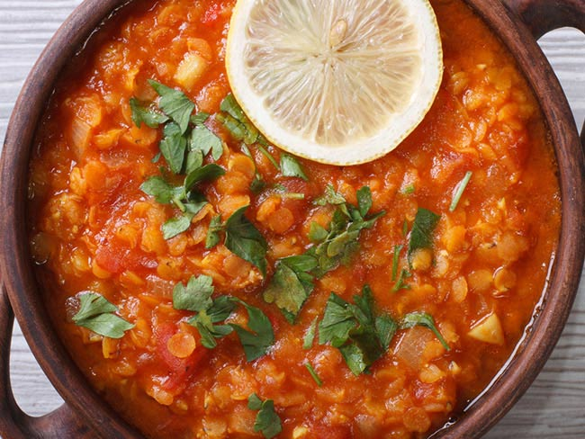
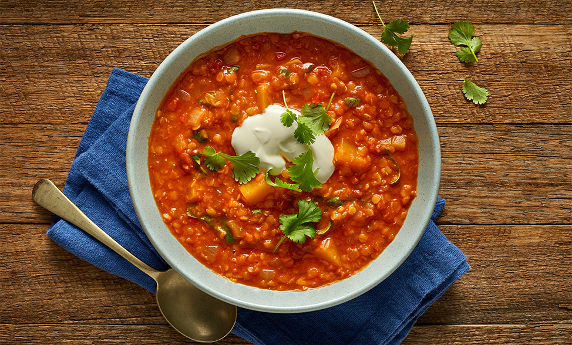
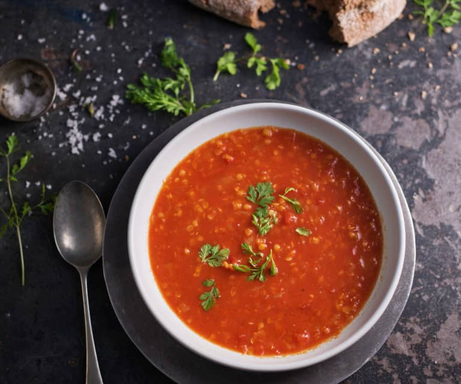
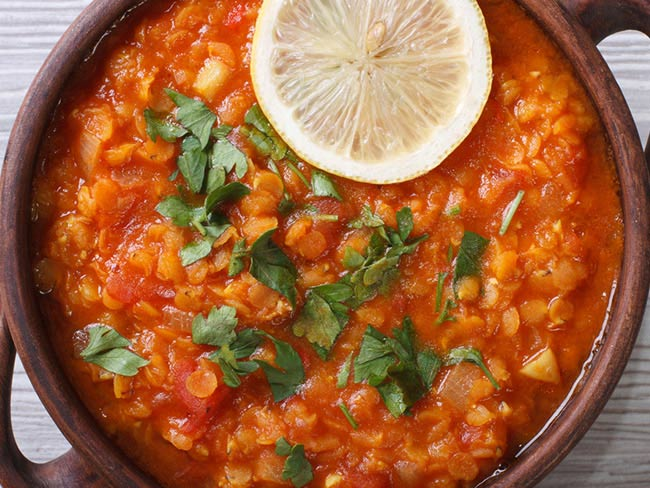
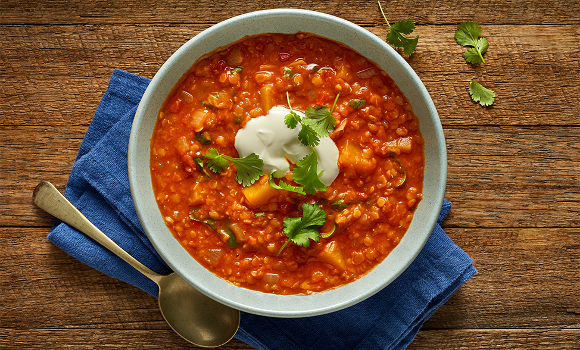
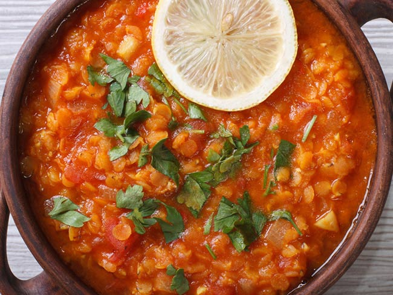
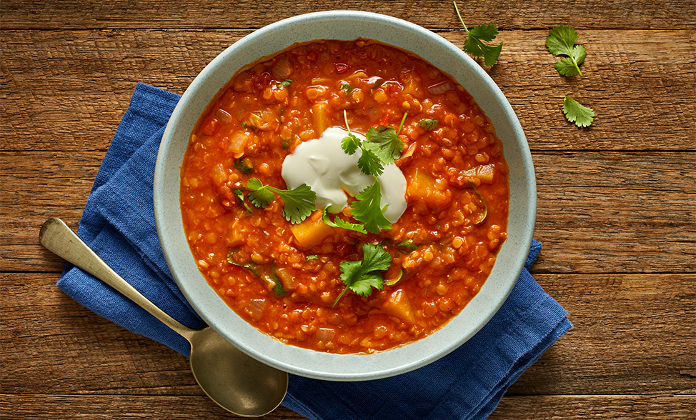
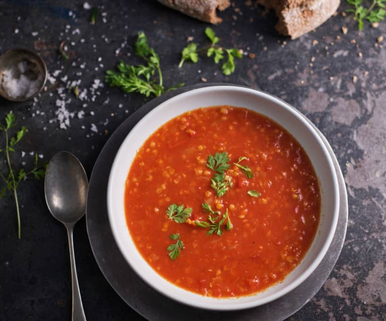
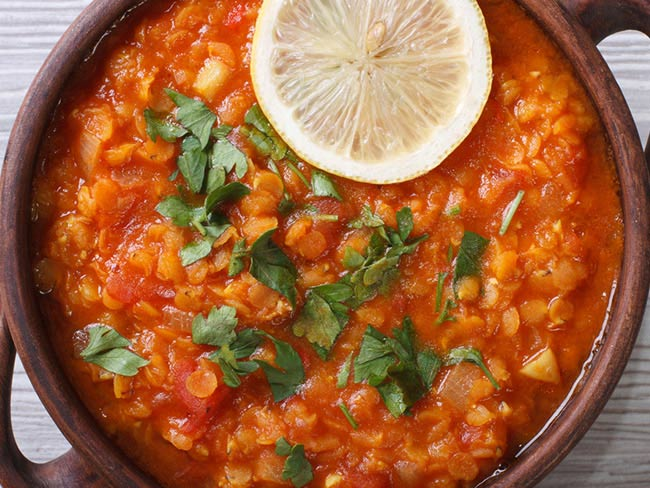
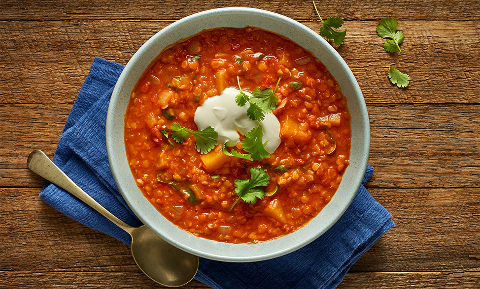
This website is dedicated to sharing the joy of making lentil soup. We believe in the simplicity and deliciousness of this nutritious dish.
For any inquiries or feedback, feel free to contact us at: info@lentilsoup.com